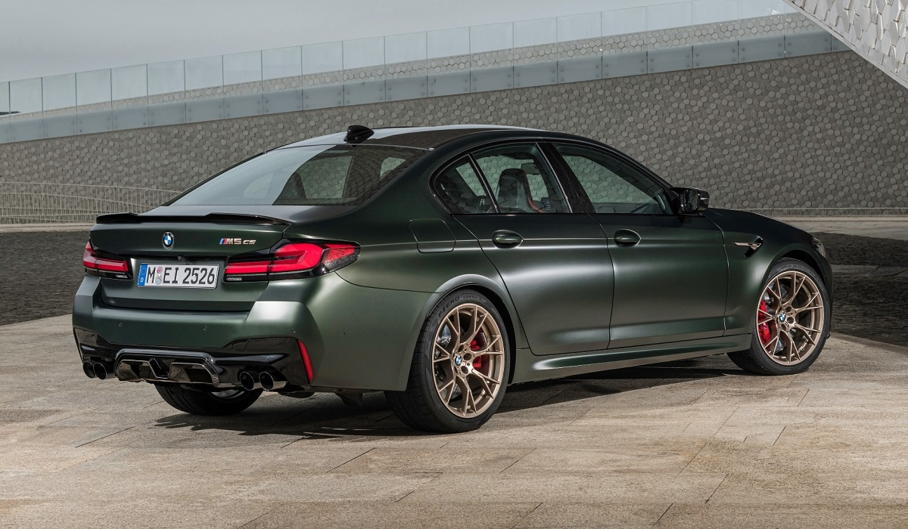
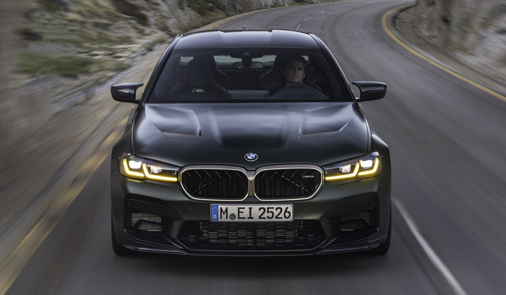
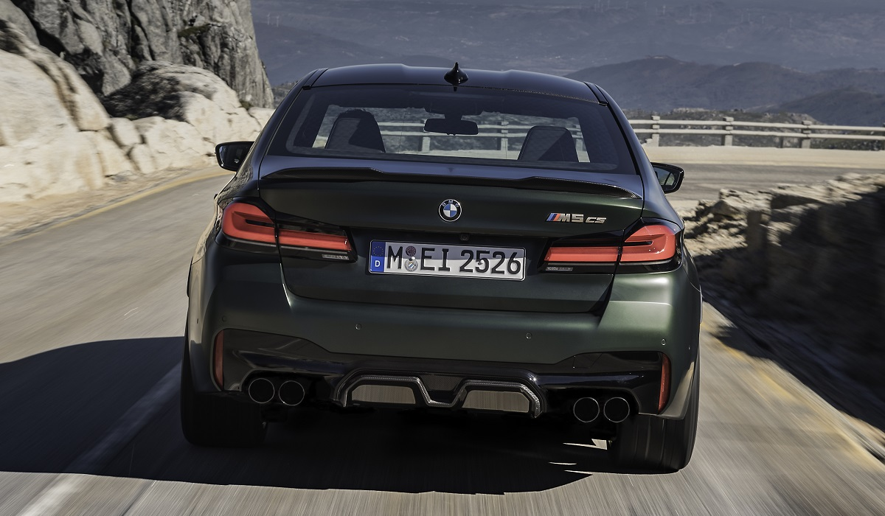
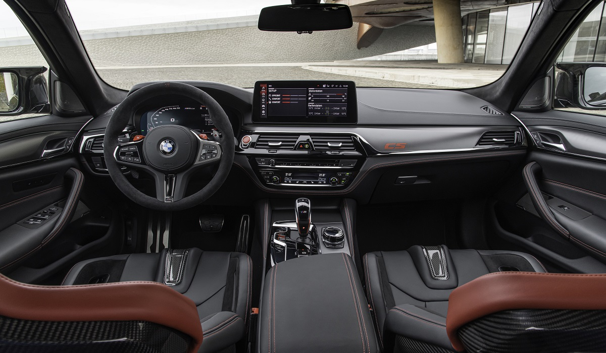
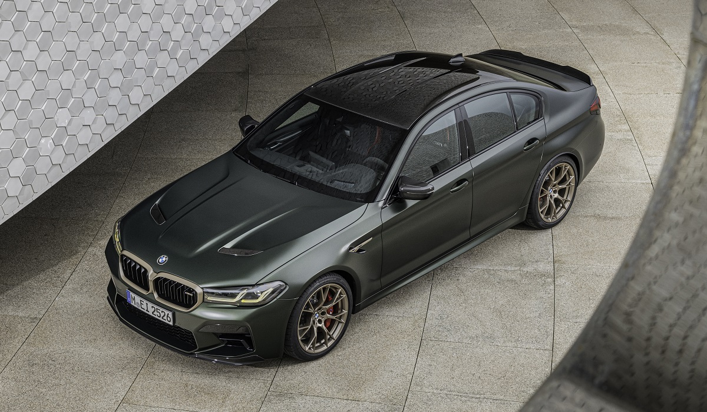
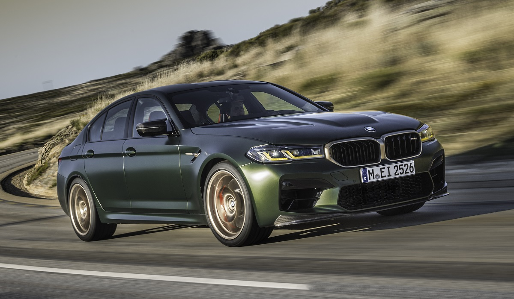

«Заряженный» седан BMW M5 прежде имел две версии — стандартную и более мощную Competition. Однако гамма M-моделей разрастается с такой скоростью, что может показаться, будто скоро она будет включать едва ли не больше разновидностей, чем стандартная «пятерка». За последние годы у моделей M2, а также M3 и M4 предыдущих поколений появились облегченные модификации с индексами CS. Теперь аналогичную версию в компании подготовили для тяжелого пятиметрового седана BMW M5.
Новый седан BMW M5 CS оказался мощнее и легче, чем M5 Competition. Отдача битурбомотора V8 4.4 увеличена с 625 до 635 л.с., хотя крутящий момент не изменился (750 Нм). В трансмиссии — тот же восьмиступенчатый «автомат» и полный привод M xDrive с муфтой подключения передней оси. В настройках сохранен заднеприводный режим, который активируется вместе с отключением системы стабилизации.
Внешне новый BMW M5 CS можно опознать по необычным светодиодным фарам, оформленным в стиле гоночных моделей бренда: при включении ближнего или дальнего света (а также после разблокировки центрального замка) секции ходовых огней светятся желтым вместо стандартного белого цвета. Подретушированный обвес со сплиттером спереди и массивным диффузором на корме увеличил общую длину машины с 4983 до 5001 мм, а без того скромный 133-миллиметровый дорожный просвет в результате усиления подвески уменьшили до 119 мм.
В салоне вместо обычных сидений спереди установлены облегченные углепластиковые кресла от модели M3 с электрорегулировками (водительское даже оснащено функцией памяти) и обогревом. От заднего ряда создатели отказываться все-таки не стали, но вместо трехместного дивана M5 CS имеет два раздельных посадочных места, поэтому салон вмещает только четырех человек. Кресла обиты черной кожей с красной прострочкой, а подголовники украшены узором в виде схемы трассы Нюрбургринг. Потолок и руль с нулевой меткой и углепластиковыми рулевыми переключателями отделаны алькантарой.
Проекционный дисплей может менять режим работы при выборе спортивных ездовых пресетов. Помимо индикации навигатора, спидометра, предупреждений систем безопасности и действующих ограничений скорости (система также распознает запрещающие обгон дорожные знаки), на него выводятся показания тахометра с «формульными» цветовыми подсказками (при активации ручного режима коробки передач).
Форсировка и снижение массы отразились на динамических характеристиках: до первой «сотни» M5 CS разгоняется ровно за три секунды, а до 200 км/ч — за 10,3 с (против 3,3 с и 10,8 с у версии Competition). Максимальная скорость по умолчанию ограничена на отметке 305 км/ч, как у младших M-версий с опциональным пакетом M Driver's Package, зато для модели CS доплачивать за него не придется.
Любопытно, что в гамму седана BMW M5 модификация CS добавлена всего лишь на год. А после ее отставки самой быстрой моделью в линейке вновь станет BMW M5 Competition — если, конечно, в подразделении M не придумают еще что-нибудь новенькое. Старт поставок первых товарных экземпляров в Европе намечен на весну, а чуть позже M5 CS доберется и до российского рынка. Цена уже объявлена: у нас за BMW M5 CS придется отдать аж 14 миллионов рублей, в то время как за M5 Competition просят от 9 млн 80 тысяч рублей.